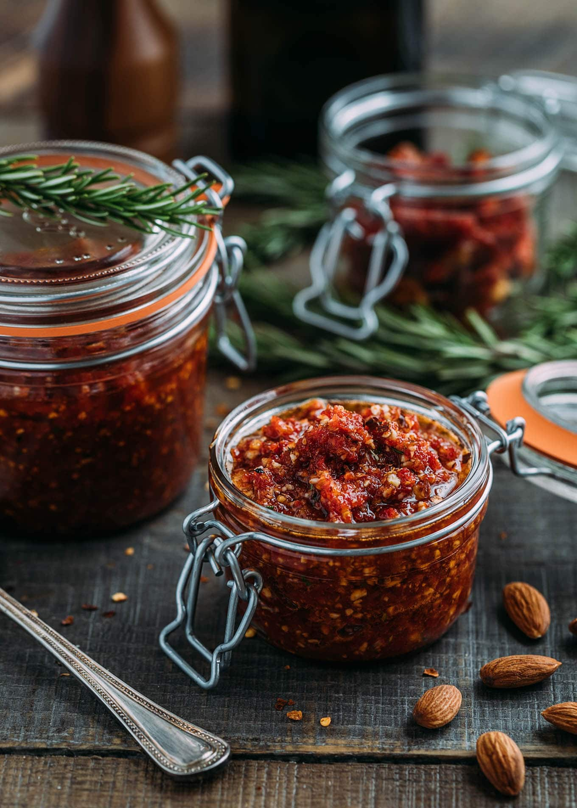

Sun Dried Tomato Pesto

Description
Also knowned as pesto rosso, sun dried tomato pesto is a paste made of sun dried tomato, basil and walnuts.
Ingredients
- 1/2 large jar of sun dried tomatos
- 1/2 cup of olive oil
- 3 garlic cloves
- Juice of 1 lemon
- 1 cup of basil
- 1 1/2 cups of walnuts
Steps
- Add all ingredients to the food processor
- Blend. It doesn't need to be completely smooth
Home